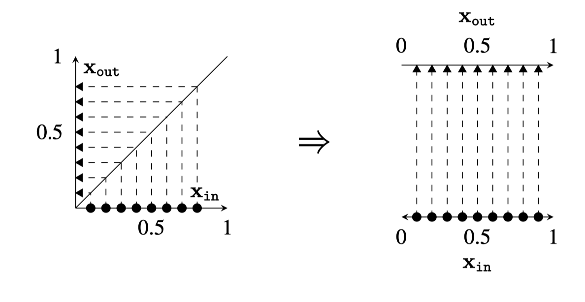
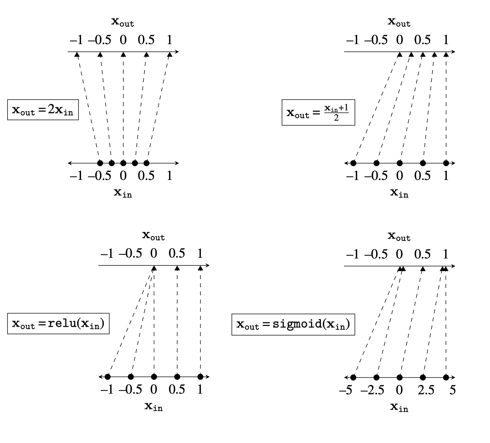
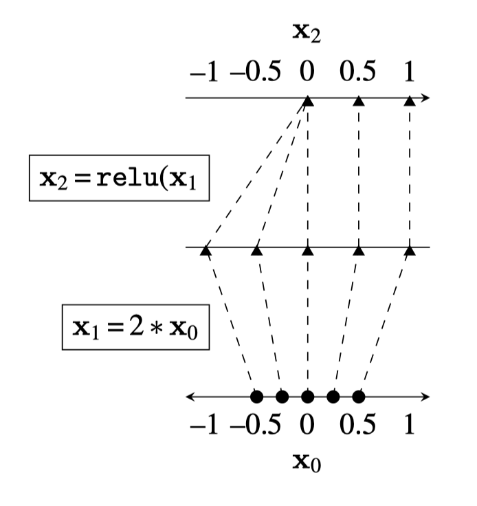
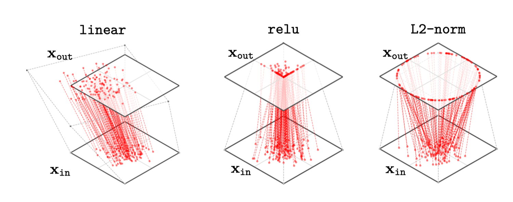
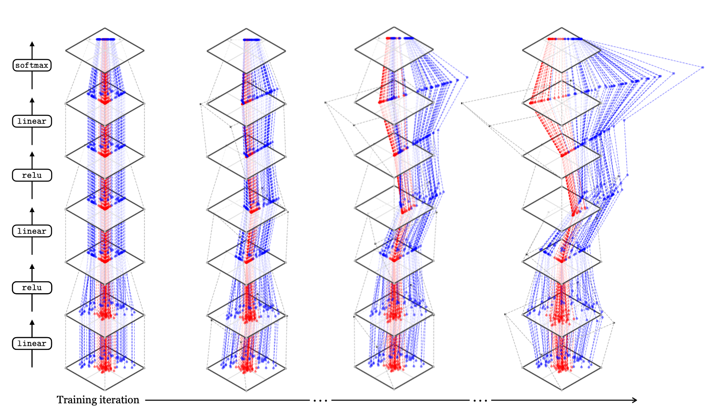
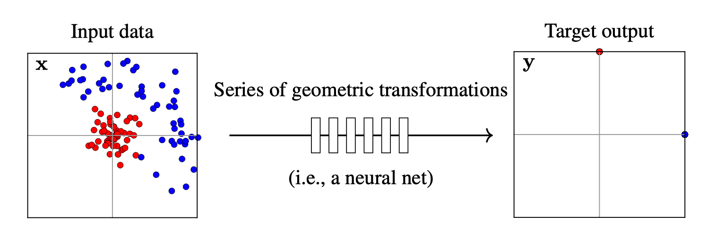
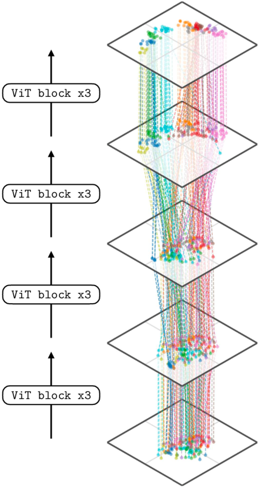

How Deep Nets Remap Data Geometrically
So far we have seen that deep nets are stacks of simple functions, which compose to achieve interesting mappings from inputs to outputs.
A different way of thinking about deep nets: - Each layer is a geometric transformation of a data distribution - We can visualize this by plotting the mapping in 2D space
Each layer in a deep net is a mapping: \(f: \mathbf{x}_{\text{in}} \rightarrow \mathbf{x}_{\text{out}}\)
Traditional plot: \(\mathbf{x}_{\text{in}}\) on x-axis, \(\mathbf{x}_{\text{out}}\) on y-axis
Alternative plot: Rotate the y-axis to be horizontal - Input space on left (bottom plane) - Output space on right (top plane) - Lines connect corresponding points

The identity function shown in the new plotting style.

Mapping plots for several simple functions (linear, relu, sigmoid).
An incoming data distribution can be reshaped layer by layer into a desired configuration.
Example: Binary softmax classifier goal - Move class 0 points to \((1,0)\) (one-hot code) - Move class 1 points to \((0,1)\) (one-hot code)

Mapping plot for a linear-relu stack showing how the space transforms.
Think of a deep net as transforming an input data distribution \(p_{\text{data}}\) through successive layers:
\[p_{\text{data}} \to p_1 \to p_2 \to \cdots \to p_{\text{out}}\]
Real deep nets perform \(N\)-to-\(N\) mappings, but 2D-to-2D visualizations give great insight.

2D mapping diagrams for linear, relu, and sigmoid layers on a Gaussian blob of data.
Note on ReLU: Maps many points to the axes of the positive quadrant. In high-dimensional spaces, most data density builds up on the axes because almost the entire space is outside the positive cone.
A clear way to visualize geometric transformations is to track how a square grid of input points gets transformed.

How a deep net remaps input data layer by layer through the network.
How a linear transformation maps points from input space (bottom plane) to output space (top plane):
Consider a 2-input, 2-output MLP for binary classification:
\[\begin{align} \mathbf{z}_1 &= \mathbf{W}_1\mathbf{x} + \mathbf{b}_1 & \text{(linear)}\\ \mathbf{h}_1 &= \text{relu}(\mathbf{z}_1) & \text{(relu)}\\ \mathbf{z}_2 &= \mathbf{W}_2\mathbf{h}_1 + \mathbf{b}_2 & \text{(linear)}\\ \mathbf{h}_2 &= \text{relu}(\mathbf{z}_2) & \text{(relu)}\\ \mathbf{z}_3 &= \mathbf{W}_3\mathbf{h}_2 + \mathbf{b}_3 & \text{(linear)}\\ \mathbf{y} &= \text{softmax}(\mathbf{z}_3) & \text{(softmax)} \end{align}\]
The goal of training is to find geometric transformations that rearrange the input distribution to match the target distribution:

Goal of a neural net classifier: move red dots to (0,1) and blue dots to (1,0).
During training, the network learns a series of geometric transformations that gradually rearrange the input distribution to separate the classes.
Checkpoints: We visualize the network at different stages of training to see how the data distribution evolves layer by layer.
The network learns to “disentangle” the classes, moving them toward their target positions through successive geometric transformations.
What if our data and activations are high-dimensional?
We use dimensionality reduction techniques (like t-SNE) to project high-dimensional data to 2D for visualization:

How a Vision Transformer maps image embeddings across layers, color-coded by semantic class.
Key observation: Earlier layers don’t separate semantic classes well, but later layers (near the output) show clean separation—classes have been “disentangled.”
Key takeaway: Deep nets transform data layer by layer from raw input to abstracted, useful representations.
This perspective helps us understand what deep nets are doing at a high level: progressively remapping and disentangling data to solve the given task.